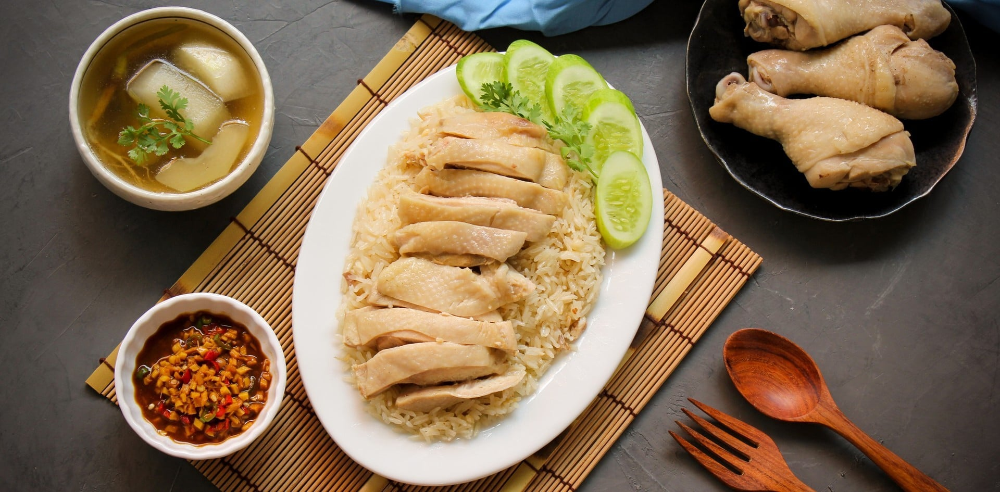
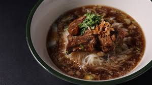
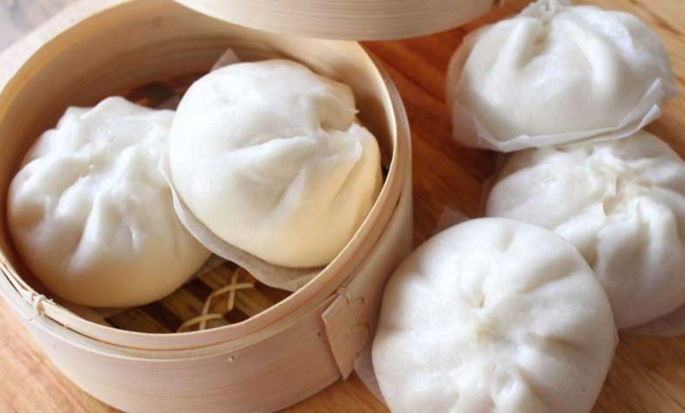

ภาคกลางเป็นศูนย์กลางทางเศรษฐกิจและการค้าของประเทศไทย โดยเฉพาะกรุงเทพมหานครที่มีชุมชนชาวจีนอาศัยอยู่เป็นจำนวนมาก ชาวจีนได้นำวัฒนธรรมการประกอบอาหาร เทคนิคการปรุง และวัตถุดิบต่าง ๆ เข้ามาเผยแพร่ จนเกิดการผสมผสานกับอาหารไทยและกลายเป็นส่วนหนึ่งของวิถีชีวิตคนไทย
อาหารที่ได้รับอิทธิพลจากจีนในภาคกลางมีอยู่หลากหลาย เช่น ข้าวมันไก่ ก๋วยเตี๋ยว บะหมี่ เกี๊ยว ซาลาเปา และติ่มซำ ซึ่งหลายเมนูได้รับการปรับรสชาติให้ถูกปากคนไทย จนกลายเป็นอาหารยอดนิยมที่พบได้ทั่วไปทั้งในร้านอาหารและตามตลาด

ข้าวมันไก่ ข้าวมันไก่เป็นอาหารที่ได้รับอิทธิพลจากชาวจีนไหหลำที่อพยพเข้ามาอาศัยในประเทศไทย ลักษณะเด่นคือข้าวที่หุงด้วยน้ำซุปและมันไก่ เสิร์ฟพร้อมไก่ต้มและน้ำจิ้มรสจัด ปัจจุบันข้าวมันไก่ได้รับความนิยมอย่างแพร่หลายทั่วประเทศ โดยเฉพาะในภาคกลางซึ่งมีชุมชนชาวจีนอาศัยอยู่เป็นจำนวนมาก

ก๋วยเตี๋ยว ก๋วยเตี๋ยวเป็นอาหารที่มีต้นกำเนิดจากประเทศจีน คำว่า "ก๋วยเตี๋ยว" มาจากภาษาจีนที่ใช้เรียกเส้นที่ทำจากข้าวหรือแป้ง ชาวจีนได้นำวัฒนธรรมการรับประทานอาหารประเภทเส้นเข้ามาเผยแพร่ในประเทศไทย จนเกิดการดัดแปลงเป็นก๋วยเตี๋ยวรูปแบบต่าง ๆ เช่น ก๋วยเตี๋ยวน้ำ ก๋วยเตี๋ยวแห้ง และก๋วยเตี๋ยวต้มยำ ซึ่งได้รับความนิยมอย่างมากในภาคกลาง

ซาลาเปา ซาลาเปาเป็นอาหารว่างที่มีต้นกำเนิดจากประเทศจีน ทำจากแป้งสาลีหมักจนฟูนุ่ม แล้วห่อไส้ต่าง ๆ เช่น หมูสับ ครีม ถั่วดำ หรือเผือก ก่อนนำไปนึ่งให้สุก ชาวจีนได้นำซาลาเปาเข้ามาเผยแพร่ในประเทศไทย ทำให้กลายเป็นอาหารว่างยอดนิยมที่พบได้ทั่วไปในภาคกลาง โดยเฉพาะในย่านชุมชนชาวจีนและตลาดต่าง ๆ